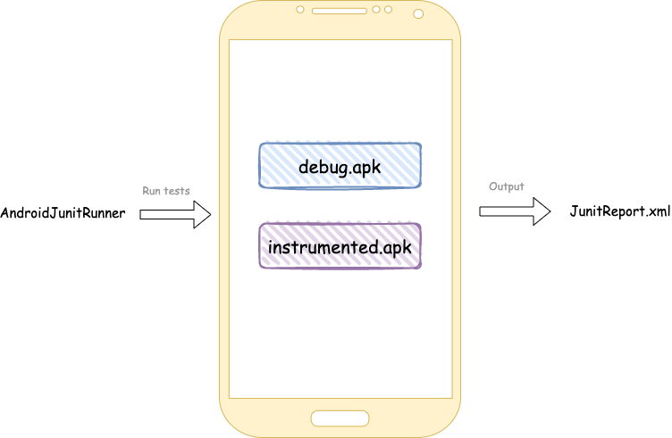

Instrumented testing
Instrumented tests are usual junit tests, but with one peculiarity:
They can be launched on Android device only.
Using them, you may check how your application communicates with Android OS.
However, they are written and executed much slower.
1. Tests location
Unlike regular jvm tests, instrumented tests located in different src: androidTest
Why different src?
You need to write code which describes a communication between your application and android device. For instance, clicking some buttons and checking that particular content has been shown, etc.
All that code should be compiled, somehow installed on the device and should make yours application to trigger the checks you need.
This code can't be a part of testSrc, because of that case we run it on JVM. There is no information about
everything related to android.
Every Android SDK class instance used in JVM test will be stubbed.
In androidSrc we have a real knowledge about Android SDK
2. How tests run under the hood
To be able to run your tests on CI and make it a part of CD, it's really important to understand how it works under
the hood.
2.1 Build
To test our application, we need to build it. We can do that with gradle:
# It will build an apk file located in app/build/outputs/debug/debug.apk
./gradlew assembleDebug
However, it's not enough for us. Remember? We also need to take care of the code we write in androidTestSrc. It also
should be built and will be represented as an apk:
# It will build an apk file located in app/build/outputs/debug/debug.apk
./gradlew assembleDebug
# It will build an apk file located in app/build/outputs/androidTest/instrumented.apk
./gradlew assembleDebugAndroidTest
We've got 2 apks:
Application and Test application, which can communicate with Application
2.2 Install
To do that, we need to use adb
adb install debug.apk
adb install instrumented.apk
2.3 Run
For running instrumented tests, AndroidJunitRunner is responsible
As an input, you need to provide tests you want to run. As an output, JunitReport.xml will be provided
All you need to do it's to execute adb command:
adb shell am instrument -w -m -e debug false \
-e class 'com.alexbykov.myapplication.ExampleInstrumentedTest#myTest' \
com.alexbykov.myapplication.test/androidx.test.runner.AndroidJUnitRunner
We need to provide some information about tests needed to be launched: particular class, class with method or package.
After execution, you may find junit report in app/build/test-results/

It's also possible to define your own instrumented arguments and get them in tests:
//add -e myKey "test" to adb command
InstrumentationRegistry.getArguments().getString("myKey", "value")
3. Tests location
3. Instrumented testing types
- UI
- Screenshot
- Migration
They are not a replacement of each other, they are complement to each other